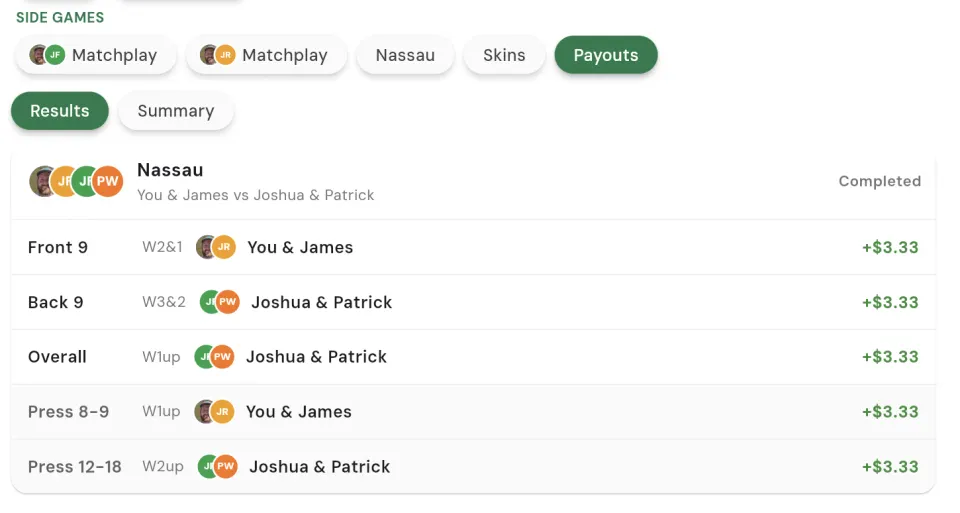
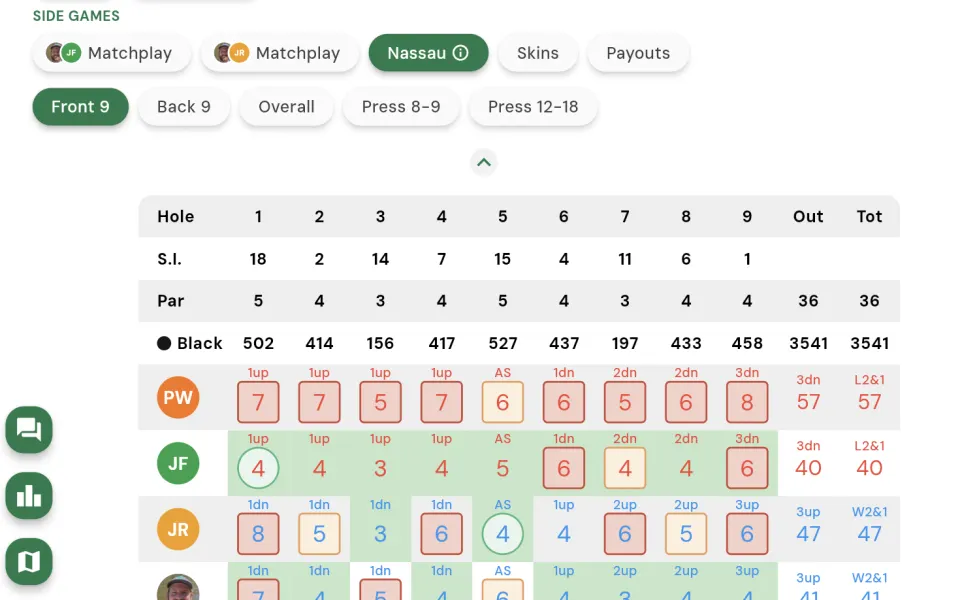

Nassau Golf Bet
Also known as: 2-2-2, Best of Three
The Nassau is the most popular bet in golf and one of the easiest to understand. It splits an 18-hole round into three separate bets — the front 9, the back 9, and the overall 18 — giving players three chances to win (or lose) in a single round. Nassau can be played individually or as a team format, and it pairs naturally with presses for even more action.
At a Glance
- Type
- Individual or Team (VS — two sides)
- Team size
- 2–24 players per side (commonly 1v1 or 2v2)
- Scoring
- Points for winning each bet (front 9, back 9, overall 18)
- Sub-games
- Best Ball, Scramble, Stroke Play, Stableford, Vegas, and many more
- Handicaps
- Off by default; Compare With Lowest when enabled
- Wins
- Most points across the three bets
The Rules
- Two sides (individual players or teams) compete head-to-head over 18 holes.
- The round is divided into three separate bets: Front 9, Back 9, and Overall 18.
- Each bet is worth a configurable number of points (the classic default is 2 points per bet).
- To determine the winner of each bet, the two sides compare their scores over the relevant holes using whatever sub-game you choose (match play, best ball, stroke play, etc.).
- The side with the lower score (or more holes won, depending on the sub-game) wins that bet and earns the points.
- If a bet is tied, neither side earns points by default (configurable).
- After 18 holes, add up the points from all three bets. The side with the most total points wins.
How the Three Bets Work
Front 9 Bet
Whoever has the better score over holes 1–9 wins this bet. If you’re down after the front, you still have two more bets to make up ground.
Back 9 Bet
A completely independent bet covering holes 10–18. This is what makes Nassau so appealing — a rough start doesn’t ruin your entire round because you can still win the back 9.
Overall 18 Bet
Compares the total scores across all 18 holes. It’s possible for one side to win the front and back bets but lose the overall, or vice versa.
The Three-Bet Money Model
When you add a wager (a buy-in) to a Nassau, Squabbit treats the three bets as three separate matches and splits the buy-in across them. Your buy-in is the whole Nassau pot, and the front 9, back 9, and overall 18 each get a share of it. The three shares always add up to the full buy-in, so you can never lose more than you bought in for on the three main bets.
How the Buy-In Splits
- Equal points → equal split. If the front 9, back 9, and overall 18 are all worth the same (the classic 2-2-2), each bet is worth one third of your buy-in.
- Unequal points → weighted split. If you give the bets different point values, each bet’s share is sized by its weight. A bet worth double the others carries double the stake.
So a $30 buy-in on a 2-2-2 Nassau puts $10 on the front, $10 on the back, and $10 on the overall. Each is settled match-play style: the winning side collects that bet’s stake from the losing side, and a tied bet pays nothing.
Itemized Payouts & Settlement
Squabbit doesn’t just show a single lump-sum result — it breaks the money down bet by bet so everyone can see exactly where it came from. The payouts view has two tabs:
Results
A card per game showing one row for each bet: the Front 9, Back 9, and Overall, plus a row for every press. Each row shows which side won, the match result (for example 2up or AS for all square), and the amount that side collected. A tied bet is marked Tied and pays nothing.
Summary
A per-player card showing each player’s net for the day (won, lost, or tied) once all the bets and presses are added up. Expand a card to see who owes whom, then settle up right there with Pay and Collect buttons. Squabbit minimizes the number of payments needed, and a settled debt stays on the list with a Paid badge so there’s a record.

Example Round
Player A and Player B are playing a 2-2-2 Nassau using stroke play:
Presses & Nine-Bound Auto-Presses
A press is a new side bet that starts mid-round and gives the trailing side a fresh chance to recover. When combined with Nassau, presses add extra action on top of the three main bets.
How Presses Work
- When a side falls behind by a set number of holes, a press is triggered (either automatically or by request).
- The press creates a brand-new bet starting from the next hole.
- The original bet continues alongside the press — both are scored and paid independently.
- Presses can themselves be pressed, creating additional layers of bets.
Nine-Bound Auto-Presses
Because a Nassau is really three separate bets, Squabbit’s auto-presses are bounded by the nine they’re on. A press never carries across the turn:
- A press that starts on the front nine runs through the 9th hole, then settles at the turn.
- A press that starts on the back nine runs through the 18th, then settles at the end of the round.
- The “down by N” deficit is measured within the current nine only, so a big front-nine lead can never trigger a back-nine press.
This keeps each press tied to the nine it was born on, so it settles at the end of that nine just like the front and back bets do. A Nassau press always wins or loses a single bet — never a jumble of partial results.
Press Stakes
A Nassau press is a bet on a nine, so its stake is sized off that nine’s share of the pot, not the whole buy-in. You can set presses to match, half, double, escalate, or use a custom amount, and the auto-press carries the same wager settings a manual press would. Only the “a side falls behind” trigger applies to a Nassau — the “match clinched” trigger isn’t offered, since three bets have no single match to clinch.
Squabbit handles all the press tracking automatically. For a full breakdown of how presses work across every format, see the Presses help article.
Front, Back & Overall Scorecard Views
When a Nassau is the selected game, the scorecard adds three chips — Front, Back, and Overall — so you can look at each of the three bets on its own.
- Front narrows the card to holes 1–9, scored as that bet’s own match.
- Back narrows it to holes 10–18, scored as its own independent match. In a match-based Nassau, each hole shows the running back-nine status (for example
2up,2dn, orAS) as if the back nine were a fresh match starting at the turn. - Overall shows all 18 holes and the full-18 bet.
This makes it easy to see exactly where each bet stands without doing the math in your head — a rough front nine doesn’t cloud how you’re doing on the back or overall bet.

Sub-Game Options
Nassau is a wrapper format — it determines how bets are structured, but the underlying game can be almost anything. In Squabbit, you choose a sub-game that determines how scores are compared on each hole. The default is Best Ball, but you can choose from:
| Sub-game | How it works |
|---|---|
| Best Ball | Each player plays their own ball; the team counts the lowest score on each hole |
| Stroke Play | Total strokes over the relevant holes |
| Stableford | Points-based scoring relative to par |
| Singles Match Play | Head-to-head hole-by-hole match play |
| Scramble / Ambrose | Team picks the best shot each time |
| Shamble | Best drive, then everyone plays their own ball |
| Alternate Shot | Partners alternate hitting the same ball |
| Chapman | Both tee off, swap, then pick one ball to finish |
| Greensomes | Both tee off, pick one drive, then alternate |
| Low Ball/High Ball | Compare best scores and worst scores separately |
| Vegas | Team scores are combined into a two-digit number |
| And more... | Best Balls, Best Ball 1-2-3, Cha Cha Cha, Low Ball/Low Total, Worst Ball |
Setting Up in Squabbit
To create a Nassau game in Squabbit:
- Create a new game and choose Nassau as the format.
- Select your sub-game (Best Ball, Stroke Play, Scramble, etc.).
- Configure the points per bet for the front 9, back 9, and overall 18. The default is 2 points for a win and 0 for a tie on each.
- Optionally add a wager (buy-in). Squabbit splits it across the three bets by their point weights, so each bet carries its own share of the pot (see The Three-Bet Money Model).
- Optionally enable per-hole points to award points for winning individual holes on top of the three main bets.
- Optionally enable auto-presses and set how far down a side must fall to trigger one. On a Nassau these presses are nine-bound and settle at the turn or at the end of the round.
- If playing as teams, set your team size and assign players to each side.
- Optionally enable handicaps. The default handicap mode is Compare With Lowest, which strokes off the best player so they play at scratch.
During the round, enter scores as you normally would for the sub-game you chose. Squabbit automatically tracks the front 9, back 9, and overall 18 bets, along with any presses, and displays the running point totals for each side.